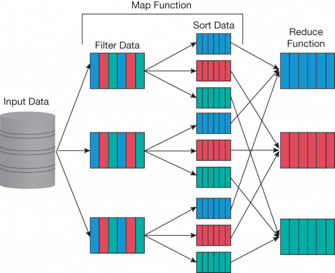
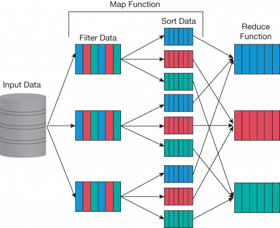
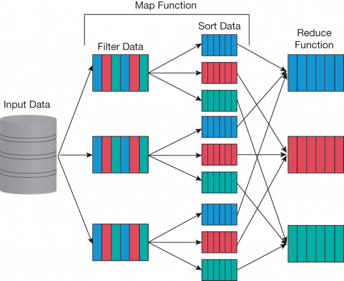

LinkedIn
ResearchGate
Platzi
GitHub

«
»
A holistic framework for assessing hot-dip galvanizing process sustainability
Journal of Cleaner Production
«
»
Sustainability indicators for end-of-life chemical releases and potential exposure
Current Opinion in Chemical Engineering
«
»
Data engineering for tracking chemicals and releases at industrial end-of-life activities
Journal of Hazardous Materials
 
